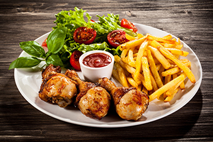

Bienvenido a nuestro blog de recetas, un espacio dedicado a compartir los sabores más representativos de diferentes partes del mundo. Aquí podrás descubrir recetas tradicionales, conocer los ingredientes más utilizados en cada cultura y aprender a preparar platos deliciosos desde la comodidad de tu hogar. Nuestro objetivo es acercarte a la gastronomía internacional y motivarte a explorar nuevas experiencias culinarias en tu cocina.
Sabores del mundo
La gastronomía mundial refleja la cultura, historia y tradiciones de cada país. En este blog podrás conocer diferentes recetas tradicionales de diversas regiones del planeta. Desde platos asiáticos llenos de especias hasta recetas latinoamericanas con sabores intensos. Cada preparación cuenta una historia que se ha transmitido de generación en generación.
Ver más información
La cocina internacional ofrece una enorme variedad de ingredientes, técnicas y estilos culinarios. En muchos países la comida es una forma de identidad cultural y de reunión familiar. Explorar recetas del mundo permite conocer nuevas culturas y descubrir sabores únicos que enriquecen nuestra experiencia gastronómica.
- Receta 1: Bandeja Paisa (Colombia)
- Receta 2: Kimchi (Corea del Sur)
- Receta 3: Tacos al Pastor (México)
Platos tradicionales internacionales
Muchos platos se han convertido en símbolos de sus países de origen. La pizza italiana, el sushi japonés o el ceviche peruano son ejemplos de recetas que han cruzado fronteras y hoy se disfrutan en todo el mundo. Conocer estas recetas es una manera divertida de viajar sin salir de casa.
Ver más información
Cada cocina tiene técnicas particulares y combinaciones de ingredientes únicas. Algunas se caracterizan por el uso de especias, otras por la frescura de sus productos o por métodos tradicionales de preparación. Este blog busca compartir ese conocimiento culinario para que cualquier persona pueda preparar platos internacionales.
- Receta 4: Pizza Napolitana (Italia)
- Receta 5: Sushi (Japón)
- Receta 6: Ceviche (Perú)

Comida rápida
La comida rápida se caracteriza por su preparación sencilla y rápida. Aunque suele asociarse con restaurantes y cadenas internacionales, también existen versiones caseras que pueden ser más saludables y prepararse con ingredientes frescos.

Comida saludable
La comida saludable se basa en el consumo de ingredientes frescos, verduras, frutas, proteínas y granos naturales. Mantener una alimentación equilibrada ayuda a mejorar la salud y proporciona energía para las actividades diarias.